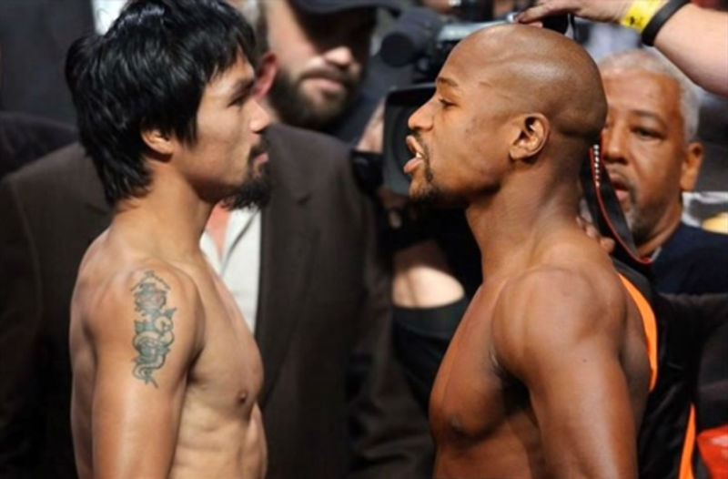

Мейуедър и Пакяо се доближиха до подписване

Някои от ключовите моменти, които по-рано бяха спънка за преговорите между Флойд Мейуедър и Мани Пакяо, са на път да бъдат изгладени.
Мейуедър срещу Пакяо може би ще бъде най-голямото боксово събитие в историята на този спорт.
Репортерът на вестник "L.A. Times", Ланс Пъгмир съобщава повече детайли:
"Мейуедър предложи приходите от двубоя да се разделят 60-40 в негова полза, а Пакяо изглежда е готов да се съгласи на това.
И двамата боксьори вече са дали съгласието си срещата да се проведе в MGM Grand Garden Arena в Лас Вегас и са се съгласили
на условията за допинг тестове. Все още обаче няма дата за срещата. Вярва се, че тя може да се проведе през май или юни.
Може би ще имаме подписан договор в близките 7-10 дена."
Далаклиев се завръща в националния

Световният шампион по бокс от 2009 г. Детелин Далаклиев се завърна в националния отбор, съобщава Sportal.bg. Плевенчанинът се качи на
лагер в Белмекен, където ще протече първата част от подготовката за новата година. През миналата година Далаклиев си беше дал почивка
от националния тим и бокса, а през декември се завърна на ринга и отвя конкуренцията на държавното първенство в Добрич.
Миналата година се появи и биографичната му книга "Никога не се предавай: Историята на Детелин Далаклиев". В края на януари предстои
републиканско в Пазарджик, а турнирът "Странджата" е следващото изпитание пред Далаклиев. Надпреварата ще се проведе в София през
февруари.
Основните цели пред националите през новата година са европейските игри в Баку, следва шампионатът на Стария континент в София през
август. Турнирът е квалификация за световното през октомври, на което ще се печелят визи за олимпийските игри в Рио.